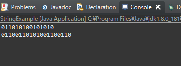

[Java] StringBuilderとStringBufferの差異
こんにちは。明月です。
この投稿はJavaのStringBuilderとStringBufferの差異に関する説明です。
Javaの中で文字列タイプのデータタイプは「String」があります。
「String」はプリミティブデータタイプ(primitive data type: int, char, double...)じゃなく、Objectクラスから継承されたクラスタイプです。
すなわち、「String」の内部はbyte(unsigned char)タイプになっています。
それで我々が「String data1 = "abc";」ということに宣言すれば内部は「byte[] data1 = new byte[] {'a', 'b', 'c'}」になります。
そのため、「String」タイプと「String」タイプの文字列を合わせると思えば、下記の処理になります。
// 「String data1 = "abc";」の内部は下記とおりになる。
byte[] data1 = new byte[] { 'a', 'b', 'c' };
// 「String Data2 = "def";」の内部は下記とおりになる。
byte[] data2 = new byte[] { 'd', 'e', 'f' };
// + 演算子を使用すれば下記通りの演算になる。
// data1とdata2のデータ長さを計算する。
int length = data1.length + data2.length;
// 結果を格納する変数をdata1の長さとdata2の長さに加算して長さにする。
byte[] ret = new byte[length];
// 配列コピーする。
for (int i = 0; i < data1.length; i++) {
ret[i] = data1[i];
}
// 配列コピーする。
for (int i = 0; i < data2.length; i++) {
ret[i + data1.length] = data2[i];
}
// 文字列が合併したデータは「ret」(「String data1 + String data2 = String ret」)
// data1とdata2は要らなくなるので、メモリ解除
Stringで文字列を合併すれば上のフローとおりに文字列が合併されます。
つまりStringにStringを合併すれば新しいStringが割当します。
それなら「String test = "abc" + "def" + "ghi" + "jkl";」は合併フローがすごく複雑になります。
そのため、StringとStringを合併することはパーフォーマンスに影響があります。
そうすれば上のArrayタイプじゃなく、連結リストタイプ(List)みたいに文字列を「add」関数で追加する方法がないかと疑問になります。
それがArrayタイプじゃなく、Listタイプで文字列を合併するのが「StringBuffer」と「StringBuilder」です。
// StringBufferとStrinbBuilderは連結リストタイプになっています。
List<Byte> data = new LinkedList<>();
data.add((byte) 'a');
data.add((byte) 'b');
data.add((byte) 'c');
//文字列の合併する時、Arrayの割当てが要らずにリストに追加できる.
data.add((byte) 'd');
data.add((byte) 'e');
data.add((byte) 'f');
// Stringはbyte[]タイプなので最後にListタイプからArrayタイプに変換
byte[] ret = new byte[data.size()];
for (int i = 0; i < data.size(); i++) {
ret[i] = data.get(i);
}
上の例だけでみれば差異がそんなになさそうです。
でも文字列の合併が多いほどパーフォーマンスの差異は確かに出ると思います。
それなら「StringBuffer」と「StringBuilder」の差異はなにでしょうか。
同期化の差異です。StringBufferの場合はクラス内部で同期化しますが、StringBuilderの場合は同期化がありません。
// Thread.sleepの「throws」を除けるための関数
private static void sleep(int time) {
try {
// Thread.sleepを「try~catch」に包む。
Thread.sleep(time);
} catch (Throwable e) {
}
}
// 実行関数
public static void main(String[] test) {
// テストするようなStringBuilderとStringBufferだ。
StringBuilder builder = new StringBuilder();
StringBuffer buffer = new StringBuffer();
// スレッドを２つを生成して0.1秒間隔で文字列を追加する。
// このスレッドは「0」を入れる
Executors.newSingleThreadExecutor().execute(() -> {
for (int i = 0; i < 10; i++) {
// 文字列を追加
builder.append(0);
buffer.append(0);
// sleepは0.1秒
sleep(100);
}
});
// このスレッドは「1」を入れる。
Executors.newSingleThreadExecutor().execute(() -> {
for (int i = 0; i < 10; i++) {
// 文字列を追加
builder.append(1);
buffer.append(1);
// sleepは0.1秒
sleep(100);
}
});
// 結果が終わる時まで10秒待ってる。
sleep(10000);
// 結果をコンソールに出力する。
System.out.println(builder.toString());
System.out.println(buffer.toString());
}

初めのスレッドで10個、２つ目のスレッドで10個を入れたので全ての文字桁数は20個になるはずです。
結果はStringBuilderには20桁数にならないです。StringBufferの場合はマルチスレッド環境でも20桁数になります。
理由はStringBufferの場合は同期化(lock)機能が内部で動くのでその結果になります。
そうすればStringBuilderは使わず、StringBufferだけ使った方がいいと思われます。
// Thread.sleepの「throws」を除けるための関数
private static void sleep(int time) {
try {
// Thread.sleepを「try~catch」に包む。
Thread.sleep(time);
} catch (Throwable e) {
}
}
// 実行関数
public static void main(String[] test) {
// テストするようなStringBuilderとStringBufferだ。
StringBuffer buffer1 = new StringBuffer();
StringBuffer buffer2 = new StringBuffer();
// スレッドを２つを生成して0.1秒間隔で文字列を追加する。
// このスレッドは「0」を入れる
Executors.newSingleThreadExecutor().execute(() -> {
for (int i = 0; i < 10; i++) {
// 同期化のため、lockをした。
synchronized (buffer1) {
buffer1.append(0);
buffer2.append(0);
}
sleep(100);
}
});
// このスレッドは「1」を入れる。
Executors.newSingleThreadExecutor().execute(() -> {
for (int i = 0; i < 10; i++) {
// 同期化のため、lockをした。
synchronized (buffer2) {
buffer1.append(1);
buffer2.append(2);
}
sleep(100);
}
});
// 結果が終わる時まで10秒待ってる。
sleep(10000);
// 結果をコンソールに出力する。
System.out.println(buffer1.toString());
System.out.println(buffer2.toString());
}
上の結果はでません。
なぜならStringBufferの「lock」の機能でデッドロック(Deadlock)に落ちてしまいました。
一番目のスレッドにはbuffer1にlockをかけてbuffer1にデータを入れようと思います。同じlockの領域なのでbuffer1.appendにはデッドロック(deadlock)に落ちてしません。
でも２番目のスレッドでbuffer1.appendの内部でlockを使うのでスレッド領域が違うスレッド1とスレッド2がお互い影響でデッドロックに落ちてしまう可能性が高いです。
実際に私もデッドロックに落ちてしまって実行中でプロセスが凍ってしまいました。
なのでマルチスレッド環境で基本的にStringBufferを使う方がデータ同期化のために良いですが、仕様によってlockがあればStringBuilderが良い時もあります。
StringBuilderとStringBufferは機能が似てますが、仕様によって使う方法は違います。
この投稿のポイントは「StringBuilder」は「同期化機能がない」、「StringBuffer」は「同期化機能があり」ということです。
ここまでJavaのStringBuilderとStringBufferの差異に関する説明でした。
ご不明なところや間違いところがあればコメントしてください。
- [Java] HttpConnectionを利用してウェブページを取得する方法2020/05/20 23:53:24
- [Java] Jsoupを利用してXMLファイル(HTML)を扱う方法2020/05/19 19:32:21
- [Java] 日付フォーマット(SimpleDateFormat)を使う方法2020/03/25 00:36:53
- [Java] サーブレット(Servlet)の環境でファイルアップロード(プログレスバーでファイルアップロード状態を表示する方法)する方法2020/03/24 00:48:21
- [Java] Spring環境でファイルアップロード(プログレスバーでファイルアップロード状態を表示する方法)する方法2020/03/22 23:15:12
- [Java] FTPに接続してファイルをダウンロード、アップロードする方法(FTPClient)2020/03/20 02:44:36
- [Java] JSPのSpring環境でschedulerのcronを使う方法2020/03/18 00:24:32
- [Java] POIを利用してExcelを扱う方法2020/03/17 01:48:00
- [Java] PDFを出力する方法(itextpdf)2020/03/13 00:47:31
- [Java] ログライブラリ(log4j)を使う方法2020/03/12 00:54:39
- [Java] Jsonタイプのデータを使う方法(Gsonライブラリ)2020/03/11 00:30:15
- [Java] Base64をエンコード、デコードする方法2020/03/09 10:24:01
- [Java] cmdコマンドを実行するための方法2020/03/06 18:01:10
- [Java] メール(javax.mail)を発送する方法2020/03/05 20:07:49
- [Java] クラス複製(Clonable, Reflection)2020/03/05 00:03:19
- [Python] 01. Python3をインストールする方法(Anacondaインストール)2020/05/25 19:02:44
- [Java] HttpConnectionを利用してウェブページを取得する方法2020/05/20 23:53:24
- [Java] Jsoupを利用してXMLファイル(HTML)を扱う方法2020/05/19 19:32:21
- [C#] 非同期ソケット通信(IOCP)-APMパターン2020/05/18 18:45:37
- [C#] 非同期ソケット通信(IOCP)-EAPパターン2020/05/15 19:31:02
- [C#] ソケット(Socket)通信をする方法2020/05/13 17:37:13
- [C#] NPOIを利用してExcelを読み込んで出力する方法2020/05/08 10:43:52
- [C#] NPOIライブラリを利用してエクセルファイルを生成する方法2020/05/07 01:49:01
- [C#] Geckoライブラリを利用してウェブスクレイピングする方法2020/05/05 00:52:26
- [C#] PDFを作成する方法(iTextSharp)2020/05/03 10:22:40
- [C#] シリアライズ(Serialization)をする方法2020/04/30 19:32:04
- [C#] dynamicタイプの動的パラメータ-DynamicObject(WinFormでASP.MVCのViewBagオブジェクトを使用する方法)2020/04/29 22:41:32
- [C#] Stringの補間式(interpolation)2020/04/27 20:39:57
- [C#] Newtonsoft.JSONライブラリを利用してJsonデータ構造を扱う方法2020/04/23 20:19:53
- [C#] EMailを送信する方法(System.Net.Mail)2020/04/22 19:00:42